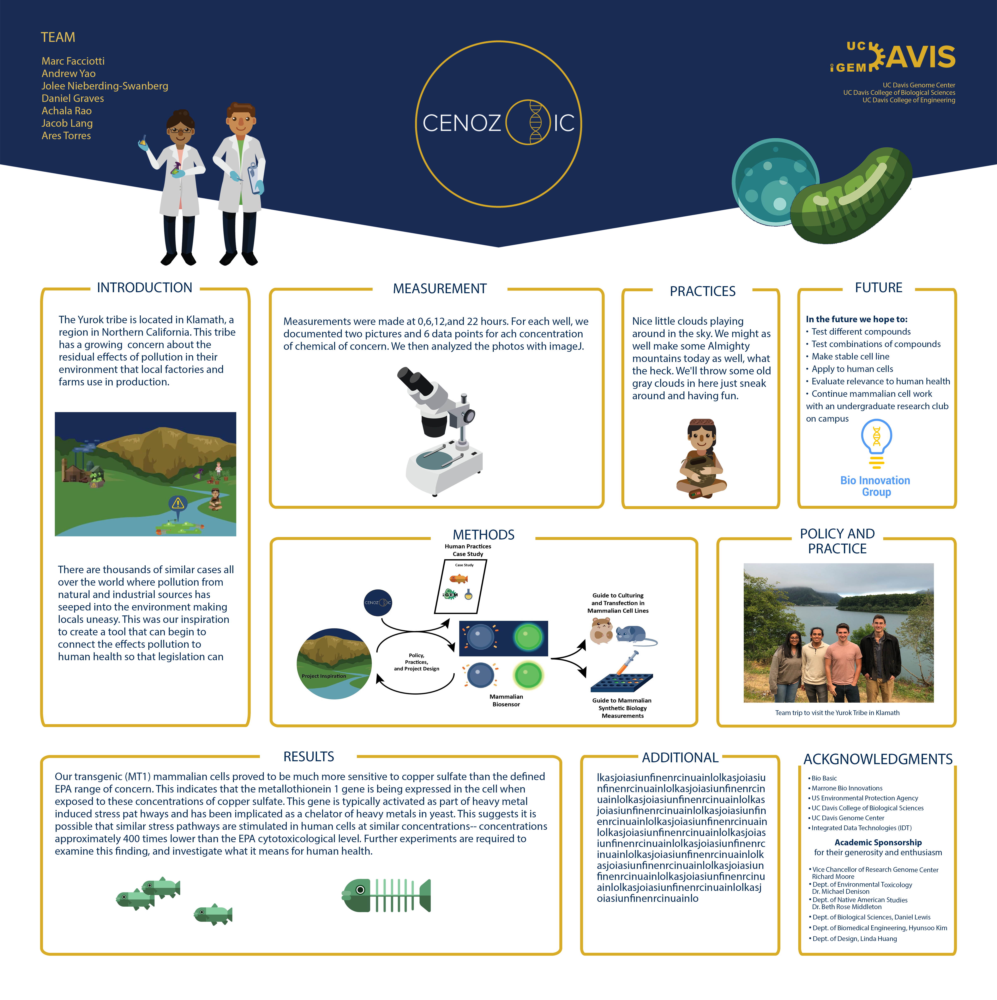

Adobe Illustrator, Adobe Photoshop, CSS3
Project Cenozoic was created for the 2018 University of California Davis team that competed in the International Genetically Engineered Machine (iGEM) competition, which is a worldwide synthetic biology competition. The distinguishing characteristic of the project was the work with mammalian cells, which was uncommon in iGEM in past years and posed new opportunities and challenges.
Project Cenozoic focused on the with studies related to the negative impacts of pollutants on the Yurok Tribe in Northern California. The team genetically modified Chinese hamster ovary cells to glow when exposed to heavy metals and toxins which provides data on the effect of chemicals of concern on the physiological health of mammalian cells. Further information on the team’s research can be found here.
The Cenozoic era is also known as ‘The Age of Mammals,’ in which mammals diversified to fill a world suddenly lacking dinosaurs. Project Cenozoic's work helped accelerate the use of mammalian and other higher eukaryotic strains as hosts in synthetic biology, by helping to lay some of the groundwork and foundational knowledge in the area.
The word Cenozoic is derived from the Greek words for ‘new’ and ‘life,’ which fit with iGEM's purpose and synthetic biology as a field, and the use of life to create new and wonderful types of tools and knowledge for the benefit of mankind. the team wanted a simple and elegant logo that represented the natural vibes of the yurok tribe, but also represents the excitement of genetic engineering. The branding is used to promote the research conducted by the Cenozoic team as wel las provide supplemental visuals for their communication purposes.
The logo was created to mimic a eukaryotic cell with the “O” as a nucleus containing DNA, which is representative of the engineered cells.
For these logos, the goal was to unify both the identity of UC Davis as well as iGEM, and some kind of bio-engineering element. I tried to keep the logos minimalist while still maintaining their clarity.
The appearance of the webpage incorporates arrows directing the viewer to successive segments of information. The logo is at the top of the page and links to both the UC Davis homepage and the iGEM master site surround it. The footer includes a brief contact section and links to different social media pages associated with the Cenozoic project.
The Cenozoic team wanted graphics they could use for their presentations both digitally and as a printed poster. The simpler graphics can be used as icons, and the more complex graphics are meant for displays. The Yurok house graphic was based off of google image searches of the term 'Yurok House.'